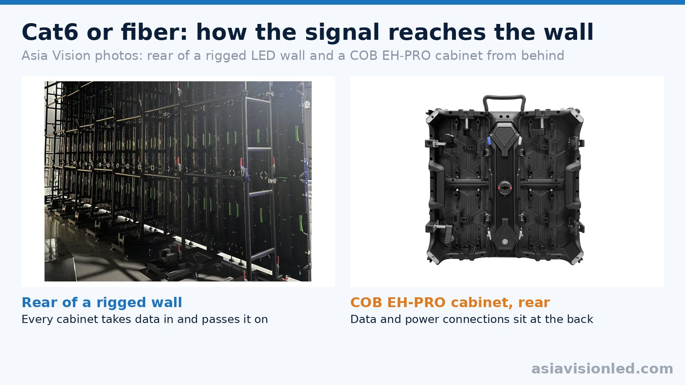
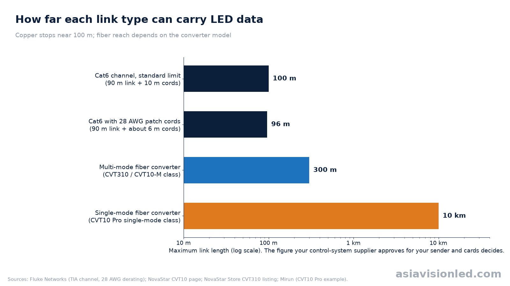
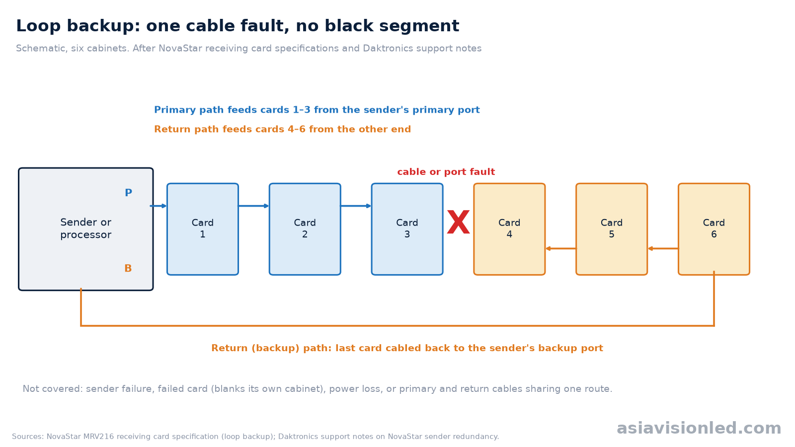
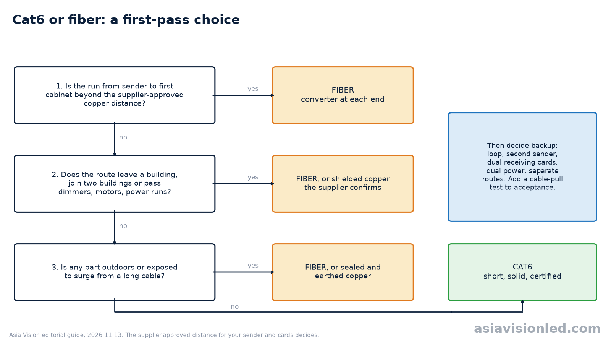

By Danny · 2026-11-13
Most LED walls are fed over copper cable that looks like ordinary network cable, and copper runs out at about 100 metres. Beyond that, or where the route is noisy, outdoors or between buildings, the data has to move to fiber through a converter at each end. The cable choice is cheap on paper, yet a bad data path is one of the most common reasons a finished wall flickers, drops a segment or goes black.
This guide is for integrators, rental companies and consultants specifying the path between the sender and the first cabinet. It covers the copper limit and why vendor figures differ, when fiber earns its cost, how loop backup works and what it does not protect, and what to write into an RFQ and test at handover. It does not replace the supplier's own wiring drawing for your control system, which always wins.
In a typical NovaStar-style chain, the sender sends data over Cat6 to the first cabinet. Each cabinet's receiving card then passes it on to the next cabinet over a short Cat6 patch. NovaStar's receiving card specification describes the card's Gigabit Ethernet ports as connecting to the sending card and cascading other receiving cards, with each connector usable as input or output. A Daktronics support note on NovaStar-based screens describes the same pattern: one run from the sender to the first receiver, then daisy-chained cables from card to card, with an optional return from the last cabinet to the sender for redundant data.
Two consequences follow. First, the long run is only the first hop, from the sender to the first cabinet. Every cabinet-to-cabinet link is a separate short cable, usually under a metre or two. Second, the cables are not general network cables. Even though they use RJ45 connectors and Ethernet-style physical layers, the data on them is the control system's own protocol, so they belong on a dedicated path. Check with the supplier before plugging a wall into a shared office or venue network.
Structured cabling standards define a twisted-pair channel of up to 100 metres: a 90 m fixed permanent link plus up to 10 m of patch and equipment cords. Fluke Networks, which makes cable certifiers, states both limits. It also notes that thinner 28 AWG patch cords add loss and cut the cord budget to about 6 m on a 90 m link. So a 100 m figure assumes good solid cable, short cords and clean terminations.
LED control links add their own limits. One LED industry guide says to treat 100 m as an outer planning boundary, not a promise that any controller works over any 100 m cable. Extra couplers, thin patch leads, tight bends, poor field plugs, moisture and routes beside motors or power conductors all eat margin before the nominal distance is reached. Published vendor figures also vary. The Daktronics note above gives 150 m for the sender-to-first-receiver run in one paragraph and a 100 m Cat6 maximum in another. Treat the number your control-system supplier approves in writing for your exact sender and cards as the only valid one.
A practical way to plan: set the copper budget from the supplier's figure, subtract the patch cords at both ends, keep a margin for the route, and move to fiber when the run is clearly past it, not marginally inside it.

Distance ladder on a log scale. Check the figure for your exact converter and sender.
Fiber is not "better cable" in every case. It is a different trade. It adds a converter at each end, each with power, a housing and a failure mode, in exchange for reach and isolation. Choose it when one or more of these is true:
Converter specifications differ by model. NovaStar's CVT10 comes in single-mode (CVT10-S) and multi-mode (CVT10-M) versions. An authorised reseller lists the CVT10 Pro at up to 300 m on multi-mode and 10 km on single-mode, and the smaller CVT310 at 300 m over multi-mode fiber at 850 nm. NovaStar's own table lists the CVT10 Pro with IP65 water resistance and rugged Neutrik connectors. A cheaper or different converter, or a third-party optical module, will have different limits. Do not copy one model's distance into an RFQ for another.
| Factor | Cat6 copper | Fiber with converters |
|---|---|---|
| Reach | Up to 100 m channel (90 m link + 10 m cords), less with thin cords or poor termination | Hundreds of metres on multi-mode, kilometres on single-mode, by converter model |
| Electrical noise | Can pick up interference near motors, dimmers and power runs | Immune to electrical interference |
| Ground and surge path | Conducts; long outdoor runs need earthing care | Isolates the two ends electrically |
| Extra equipment | None between sender and card | Converter at each end, each needing power and a housing |
| Termination | RJ45 crimp or moulded plug; easy to replace in the field | Needs cleaning, correct bend radius and care at connectors |
| Cost | Lowest | Higher: converters, fiber and termination |
| Typical use | Control rooms, retail, short touring runs, cabinet-to-cabinet links | Stadiums, large venues, building-to-building, noisy routes |
Loop backup, also called ring or return-path backup, uses the optional return cable. The sender's primary port feeds the chain from one end. The last cabinet is cabled back to the sender's backup port. NovaStar's receiving card specifications describe it this way: the receiving card and sending card form a loop via main and backup connections, and if a fault occurs at a location on the lines, the screen can still display normally. A cut in the middle leaves two chains, each fed from its own end. On the card, the running indicator flashes eight times every 0.5 seconds to show that a switchover has happened.

Loop backup: a cable cut leaves two chains, each fed from its own end.
Setting it up is not only cabling. In NovaStar-based systems each primary and backup port pair is added to the redundancy table in the configuration software, and the last receiving card must actually be connected back to the sender (Daktronics support note). Test it by unplugging a cable on purpose during commissioning, and make that a line in the acceptance test.
Loop backup protects against a bad cable, connector or port in the chain. It does not make the whole system redundant. Check each of these separately:
Our RH-PRO product page lists dual power, dual receiver and dual signal paths for rooms that cannot go dark. Our COB CV-PRO page lists dual system backup. Redundancy adds cost, and a lobby wall that can tolerate a short repair may not need it. The control room operations guide covers when it is worth paying for.
Use the flow below at concept stage, then confirm it against the cabling drawing for your sender and cards.

First-pass choice only. The supplier's approved distance for your sender and cards decides.
Testing matters as much as the choice. Fluke Networks recommends permanent link testing for new installations. The fixed 90 m portion is the foundation, and a channel test with good cords can pass even when the permanent link is marginal. Patch cords are the weakest link and move around, so test or replace suspect ones. For LED walls, add what the control system provides: the receiving cards report temperature, voltage and communication status, and the NovaStar MRV series lists a bit-error test. Run the bit-error test before the content goes on, not after the first complaint. Our cable and wiring guide covers power and signal practice more broadly.
These are illustrative planning examples, not project cases. Always confirm with the supplier.
| Scenario | Likely path | Why |
|---|---|---|
| Indoor control room, wall 30 m from the sender | Cat6 | Well inside the copper limit; cheapest and easy to repair |
| Venue control booth about 250 m from the screen | Fiber with a multi-mode converter pair, if the model's listed distance covers it | Beyond a copper channel; multi-mode converters are listed to about 300 m |
| Screen in a different building from the control room | Fiber, single-mode if the run is long | Electrical isolation between buildings and reach |
| Rigged touring wall with 5 m cords from the sender to the rack | Cat6 in cases, with spare cords | Short runs; cords are the failure item, so carry spares |
| Wall beside dimmer racks or large motors | Fiber, or shielded copper confirmed by the supplier | Reduces induced noise on the link |
See the power distribution guide for the matching power plan.
Asia Vision ships NovaStar control by default, with Colorlight as the alternative and MQ available where a project already runs it. Every batch goes through a 72-hour burn-in before dispatch. We supply a wiring drawing with each project and will review your run length and route to recommend copper or fiber and the right backup. Every order carries a 3-year standard warranty and leaves our Shenzhen factory within 18 days of order confirmation. There is no MOQ and no tooling fee.
Send the run length from the control position to the screen, the route and whether any part is outdoors. We will recommend copper or fiber, the backup design and the cabling drawing. Email info@asiavisionled.com or message us on WhatsApp at +86 172 7666 5558.
Request Wiring AdviceChat on WhatsApp